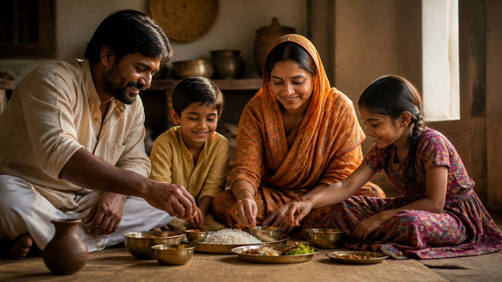

क्या भोजन केवल भोजन है?
हम अक्सर सोचते हैं कि सात्विक आहार (शुद्ध, हल्का, मन को शांत रखने वाला भोजन) खा लिया, तो काम पूरा हो गया। पर आचार्य उपेंद्र जी एक नया पहलू सामने रखते हैं।
आहार का संबंध आपके पैसा कमाने के ढंग से भी है। भोजन किस धन से आया, यह भी उसके फल को तय करता है।
तो क्या केवल सात्विक भोजन काफ़ी है? आचार्य जी के अनुसार नहीं। ईमानदार कमाई और सात्विक भोजन मिलकर फल देते हैं। अन्याय और लूट के धन से बना सात्विक भोजन भी वही फल नहीं देता, जबकि मेहनत और सत्संग से आए धन की पवित्रता, भक्ति और सत्त्वगुण व्यक्ति की कुछ तो रक्षा करते हैं।
धन और भोजन के अलग-अलग मेल
आचार्य जी कुछ स्थितियाँ गिनाते हैं:
- काले धन से कमाकर घर में सात्विक भोजन पकाया, तो फल अलग आएगा।
- ईमानदार मेहनत का धन, सत्संग से और अच्छे लोगों के बीच परिश्रम से आया, पर भूल से तामसिक (भारी, जड़ता बढ़ाने वाला) भोजन खा लिया, तो यह एक दूसरा मेल है।
- राजसिक (बेचैनी और लालसा से भरी) वृत्ति से कमाया, फिर डॉक्टर के कहने पर सात्विक, आयुर्वेदिक भोजन किया, तो परिणाम फिर अलग हो सकता है।
यानी थाली का भोजन और उसे खरीदने वाला धन, दोनों मिलकर असर बनाते हैं।
आपकी थाली में जो भोजन है, वह किस कमाई से आया है?
अन्याय का धन, सात्विक भोजन
मान लीजिए कोई बाहर चोरी करता है, लोगों को कष्ट देता है, लूटमार से पैसा लाता है। फिर उस पैसे से वह कितना भी सात्विक भोजन ले, चाहे चुराकर, चाहे किसी आधे-अधूरे सौदे से, या घर आकर खुद सात्विक भाव से पकाकर।
आचार्य जी पूछते हैं: क्या ऐसे व्यक्ति को वही फलश्रुति (कर्म का फल) मिलेगी? उसने किसी का हक छीनकर कमाया है। भोजन सात्विक है, वह तो वही है, पर धन की अशुद्धि साथ चलती है।
जब सात्विक व्यक्ति के साथ गलत हो, तो क्या भक्ति रक्षा करती है?
अब उलटी स्थिति देखिए। एक व्यक्ति बहुत मेहनती है, सात्विक है, बाहर उसका आचरण अच्छा है। प्रारब्ध (पिछले कर्मों से बना भाग्य) के कारण उसके पास पैसा कम है या नहीं है।
कोई दुष्ट व्यक्ति उसके भोजन में कुछ गलत मिला देता है, कुछ तामसिक खिला देता है। तब क्या होगा?
आचार्य जी कहते हैं कि उसकी भक्ति, उसका सत्त्वगुण और उसकी द्रव्य-शुद्धि (धन की पवित्रता) उसे कुछ तो बचाएगी।
मीराबाई ने विष कैसे पचा लिया?
इसका प्रमाण है मीराबाई। उन्हें विष दिया गया, ऐसा विष जिसे वे पचा नहीं सकती थीं। फिर भी आचार्य जी बताते हैं कि उन्होंने उसे अपनी भक्ति से पचा लिया।
भीतर की शुद्धि बाहर से आई अशुद्धि पर भारी पड़ सकती है।
क्या आपकी भीतरी शुद्धि इतनी है कि वह आपकी रक्षा कर सके?
मुख्य बातें
- आहार का फल केवल भोजन पर नहीं, उसे खरीदने वाले धन पर भी निर्भर करता है।
- अन्याय और लूट के धन से बना सात्विक भोजन भी वही फल नहीं देता।
- मेहनत और सत्संग से आया धन, यानी द्रव्य-शुद्धि, व्यक्ति की रक्षा करती है।
- भक्ति और सत्त्वगुण बाहर से आई तामसिकता को भी काट सकते हैं, जैसे मीराबाई ने विष पचा लिया।
आगे पढ़ें

हम आज दुनिया भर के व्यंजन एक क्लिक पर मँगा सकते हैं। पर क्या जो हमें मिल सकता है, वही हमारे लिए बना भी है?

हम सबने सुना है कि प्रकृति के तीन गुण हैं: सत्व, रज और तम। पर क्या आपने कभी रुककर सोचा है कि "गुण" शब्द का अर्थ वास्तव में क्या है?

हम बचपन से सुनते आए हैं कि जो मेहनत करेगा, उसके पास धन आएगा। गुरुदेव इस सोच को पलट देते हैं। वे बताते हैं कि मेहनत करने वाले के पास धन नहीं आता,…